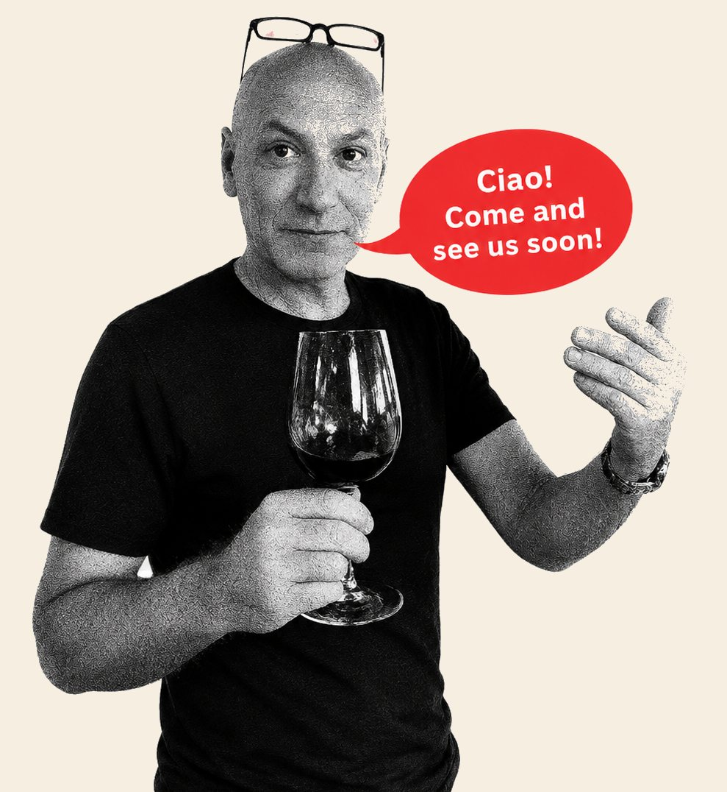

Our story
Turin roots, Singapore Soul
Born in the picturesque city of Turin, chef‑owner Francesco Sottile is a dynamic Italian entrepreneur who built Bacino as his way of bringing a true slice of home to Southeast Asia. Together with his Singaporean partner Evelyn, they run the restaurant as a warm, family‑style bistro, blending his northern Italian roots with her local sensibilities to create a welcoming neighbourhood spot.
Every plate is built on tradition and a few well-kept secrets: pancetta in the ragù, a splash of white wine in the sauce, porcini and truffle where it counts. Simple ingredients, treated with respect.
Il buon cibo non ha bisogno di gridare.
Good food doesn’t need to shout. It just needs to be honest.
Good food doesn’t need to shout. It just needs to be honest.